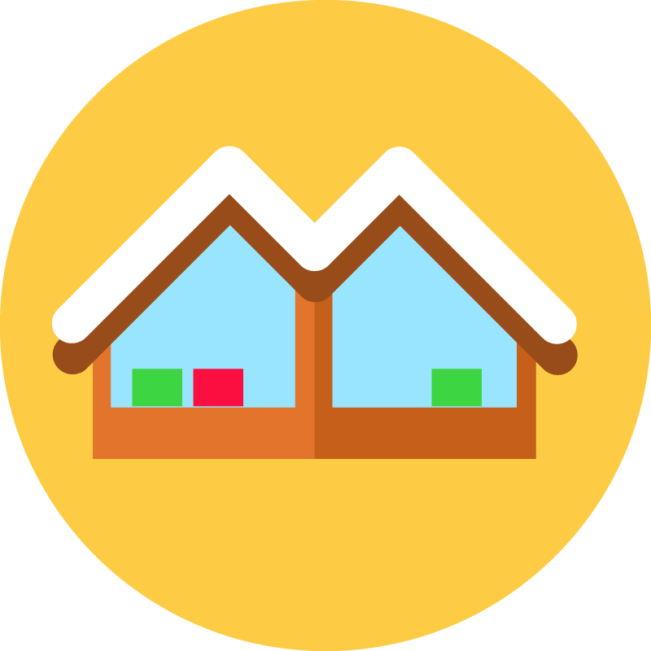

<ion-header>
  <ion-toolbar color="warning">
    <ion-buttons slot="start">
      <ion-back-button color="light" text=""></ion-back-button>
    </ion-buttons>
    <ion-title>
      
    </ion-title>
    <ion-buttons slot="end">
      <ion-button color="light" (click)="logout()"><ion-icon slot="icon-only" name="log-out"></ion-icon></ion-button>
    </ion-buttons>
  </ion-toolbar>
</ion-header>

<ion-content>
  <ion-card>
    <swiper-container *ngIf="service" [loop]="true" pagination="true" zoom="true">
      <swiper-slide *ngFor="let photo of service.data.photos">
        <div class="swiper-zoom-container">
          
        </div>
      </swiper-slide>
      <div class="swiper-pagination"></div>
    </swiper-container>
    <ion-card-header *ngIf="service">
      <ion-card-title>{{ service.data.name }}</ion-card-title>
      <ion-card-subtitle>
        <div><ion-icon name="location-outline"></ion-icon> {{ service.data.shop_company.shop_location.name }}</div>
      </ion-card-subtitle>
      <h1><small>€</small>{{ service.data.price }}</h1>
    </ion-card-header>

    <ion-card-content *ngIf="service">
      <div [innerHtml]="service.data.description" class="ion-margin-bottom"></div>
      <ion-button *ngIf="service.data.attachment" target="_system" href="{{ service.data.attachment.original_url }}">{{
        service.data.attachment_name }}</ion-button>
      <ion-button *ngIf="service.data.youtube" target="_system"
        href="https://www.youtube.com/watch?v={{ service.data.youtube }}">Vídeo</ion-button>
      <ion-button (click)="goCompany(service.data.shop_company.company.id)" style="text-transform: initial;" size="small" fill="outline">{{ service.data.shop_company.company.name
        }}</ion-button>
    </ion-card-content>
  </ion-card>
</ion-content>

<ion-footer>
  <ion-toolbar color="success">
    <ion-button *ngIf="access_token" expand="full" fill="clear" color="light" size="large" (click)="schedule()">Agendar</ion-button>
    <ion-button *ngIf="!access_token" expand="full" fill="clear" color="light" size="large" (click)="router.navigateByUrl('login')">Login para agendar</ion-button>
  </ion-toolbar>
</ion-footer>